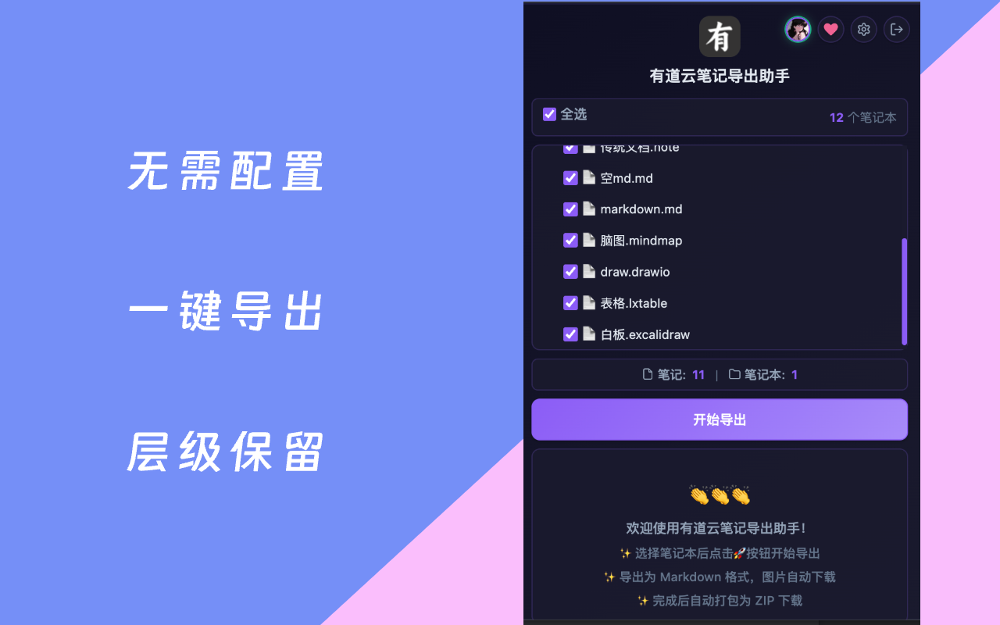

有道云笔记的批量导出，真正的难点不只是“把文字拿出来”，而是保留目录、下载图片、处理表格和思维导图，并让结果能被 Obsidian、Typora、Logseq 等工具继续使用。
如果你的笔记只有十几篇，手动导出还能接受；如果已经积累了多年内容，导出方案就会直接影响迁移成本和数据完整性。下面对比三种常见路线。
方案一：官方客户端逐篇导出
这是最直观的方案：打开有道云笔记客户端或网页端，逐篇导出为支持的格式，再手动整理文件。
适合人群
笔记数量很少、只需要临时导出几篇文档、对目录结构和图片完整性要求不高的用户。
主要问题
- 不适合批量操作，几十篇之后成本迅速上升。
- 导出后需要手动整理原有笔记本和文件夹层级。
- 图片、白板、思维导图、表格等资源需要额外检查。
- 迁移到 Markdown 工具时通常还要再次转换格式。
方案二：命令行脚本
一些开源脚本可以调用有道云笔记接口下载数据，再转换为本地文件。这类方案的灵活度更高，但对使用者有技术要求。
适合人群
熟悉 Python、能处理 Cookie、依赖安装和接口变更的技术用户。
主要问题
- 需要手动获取 Cookie 或配置认证信息，非技术用户容易卡住。
- 接口变更、依赖版本和运行环境都可能导致失败。
- 不同脚本对图片和特殊格式的支持程度不一致。
- 导出过程通常缺少图形化进度和错误列表。
方案三：有道云笔记导出助手
有道云笔记导出助手是 Chrome 扩展。它直接读取浏览器中 note.youdao.com 的登录状态，加载笔记本树，用户勾选范围后在本地转换 Markdown、下载资源并打包 ZIP。

核心优势
- 零配置认证：不需要手动复制 Cookie，保持浏览器登录即可。
- 批量选择：可按笔记本和文件夹选择导出范围。
- Markdown 输出：结果由 .md 文件和同级 assets 目录组成。
- 资源本地化：图片、SVG 等依赖资源保存到本地，Markdown 使用相对路径。
- 特殊格式转换：表格、思维导图、Draw.io、Excalidraw 和图片文件都有对应转换策略。
- 后台执行：关闭弹窗不会中断导出任务。
三种方案对比
| 维度 | 官方逐篇导出 | 命令行脚本 | Chrome 扩展 |
|---|---|---|---|
| 技术门槛 | 低 | 高 | 低 |
| 批量能力 | 弱 | 强 | 强 |
| 目录结构 | 需手动整理 | 视脚本而定 | 自动保留 |
| Markdown | 不稳定 | 视脚本而定 | 标准输出 |
| 图片资源 | 需手动检查 | 视脚本而定 | 自动本地化 |
| 特殊格式 | 支持有限 | 通常有限 | 内置转换 |
| 进度管理 | 无 | 命令行日志 | 图形化进度 |
| 隐私边界 | 本地 | 取决于脚本 | 本地浏览器处理 |
导出后的迁移建议
导出的 ZIP 解压后就是普通文件夹。你可以根据目标工具选择不同方式：
| 目标工具 | 建议做法 |
|---|---|
| Obsidian | 将解压后的文件夹作为 Vault 打开。 |
| Typora / VS Code | 直接打开导出的文件夹。 |
| Notion | 使用导入功能分批导入 Markdown。 |
| Logseq | 将 Markdown 文件整理到目标 graph 的 pages 或 journals 工作流中。 |
备份建议
- 导出完成后随机打开几篇笔记，检查正文、图片和目录。
- 重要资料建议至少保留两份副本，例如本地硬盘和网盘。
- 迁移完成前不要立刻删除有道云笔记中的原始内容。
- 长期使用有道云笔记时，可以按月或按季度定期导出。
写在最后
笔记工具可以更换，但知识资产不应该被锁死在某个平台里。对大多数用户来说，Chrome 扩展方案在门槛、完整性和可控性之间更平衡：登录后选择范围，导出为 Markdown 和本地资源，再用 ZIP 保存归档。
相关链接：